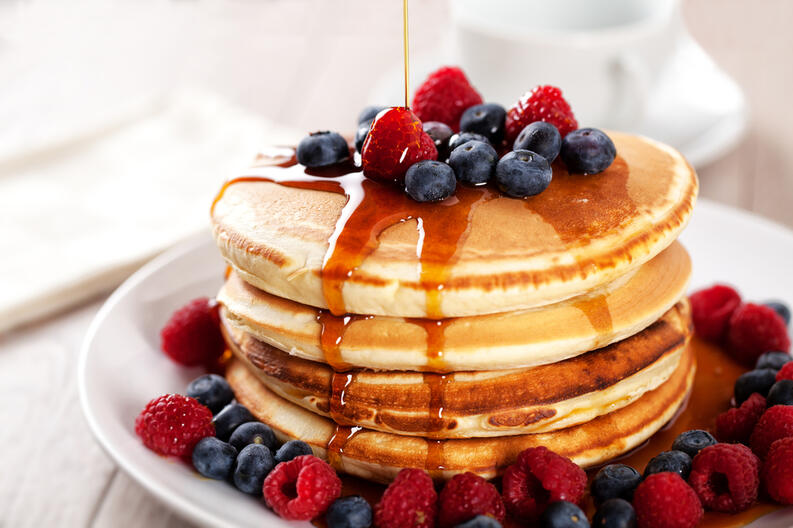

Panqueques
Description
El panqueque es un plato tradicional que se come al desayuno, es alto en proteinas como tambien en carbohidratos, especial para las personas que realizan actividad fisica. Cabe destacar que es bastante contundente.
Ingredients
- Leche
- Huevos
- Harina
- Endulzante
- Proteina en polvo
- Aceite
Steps
- Mezclar todos los ingredientes en la mini blender.
- Calentar una sarten con un poco de aceite esparcido.
- Agregar mezcla con forma y grosor a gusto.
- Voltear cuando se hagan burbujas y se seque levemente.
- Servir con agregado a gusto.